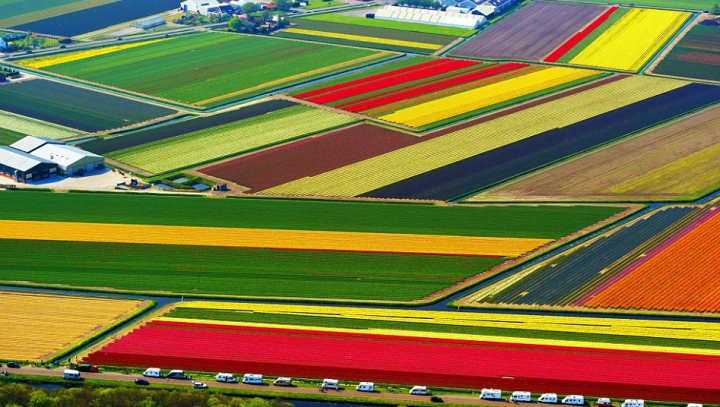
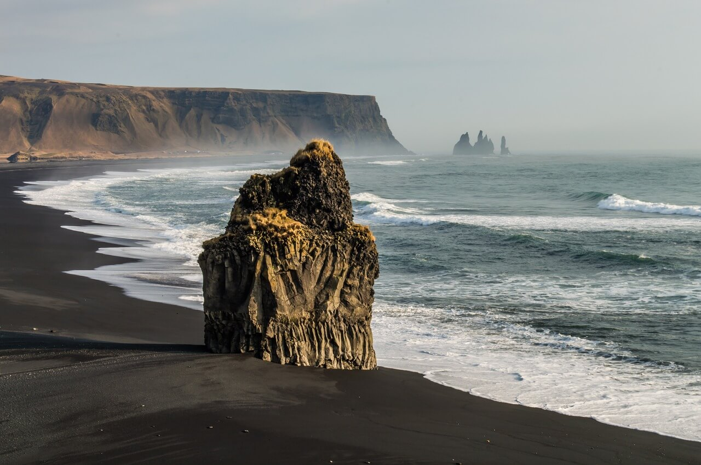
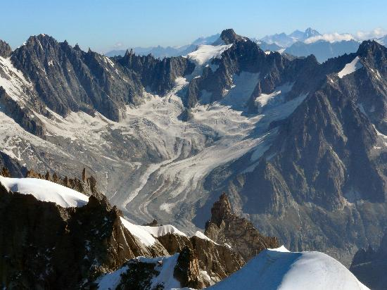
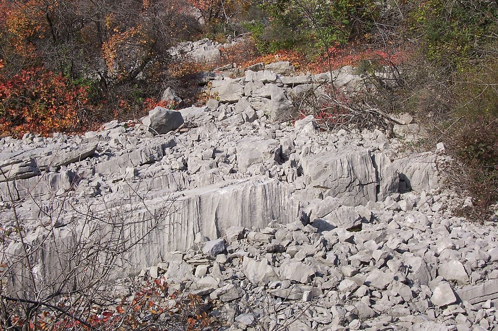
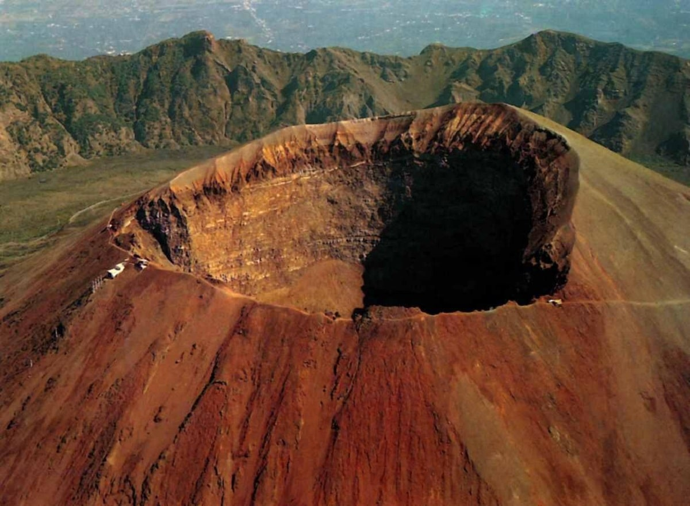
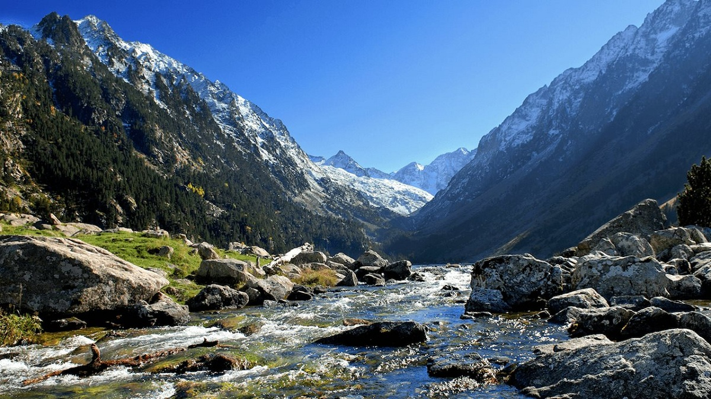

Citat de Claudiu Ptolomeus:Geografia este această ştiinţă sublimă care citeşte în cer imaginea Pământului.
Din punct de vedere geografic, Europa este parte a celui mai mare bloc de uscat al Terrei, Eurasia.
Continentul începe la Munții Ural din Rusia, care definesc granița estică a Europei cu Asia.
Granița sud-estică cu Asia nu este definită în totalitate. Munții Ural sau Râul Emba pot servi ca granițe posibile. Granița continuă cu Marea Caspică și apoi cu creasta Munților Caucaz sau, alternativ, cu Râul Kura din Caucaz, și apoi către Marea Neagră; Bosforul, Marea Marmara și strâmtoarea Dardanele completează granița asiatică.
Informatii generale
"Dincolo de Atlantic" - Stelian Platon
 Relief de campie - campie din Olanda
 Relief litoral - plaja din Islanda
Relief glaciar montan - Muntii Alpi
 Relief carstic - Podisul Karst
Relief vulcanic - Vulcanul Vezuviu 
Relief piemontan - Muntii Pirinei 
Apasa pentru trimiterea la inceputul paginii
___ / | / / / / ____________ * /_____ | | | | | _________| | | | | | _________| | | | |_________|______________|